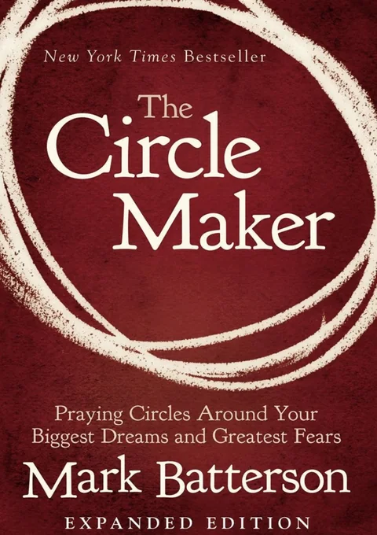
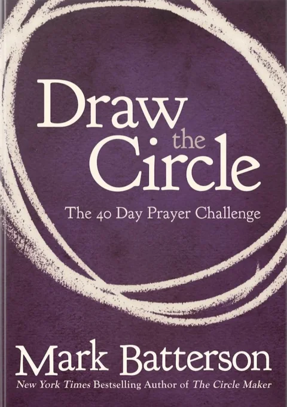
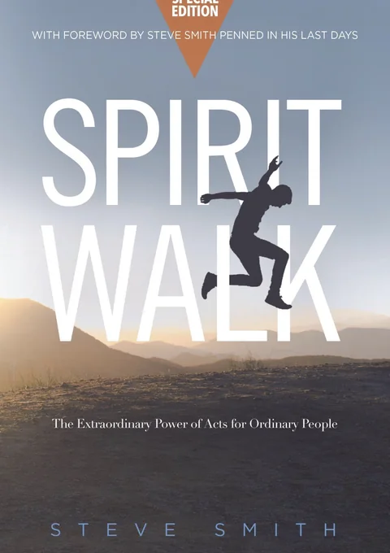

Books
Discover inspiring books to deepen your prayer life and grow closer to God. Explore our recommendations and find your next read at online bookstores.

The Circle Maker
Mark Batterson
What if you started praying with more faith, courage, and persistence?
In The Circle Maker, pastor Mark Batterson challenges readers to dream big, pray boldly, and trust God with their greatest hopes and fears.
Inspired by the story of Honi, a man who prayed persistently for rain, Batterson shares powerful stories and practical lessons about the importance of consistent, faith-filled prayer.
This book encourages you to bring your biggest dreams and toughest challenges before God, keep praying even when answers take time, and discover how prayer can transform not only your circumstances but also your heart.
A great read for anyone who wants to grow in faith and build a stronger prayer life.
Find in bookstores
Draw the Circle
Mark Batterson
Ready to take your prayer life to the next level?
In Draw the Circle, pastor and bestselling author Mark Batterson invites you to take a 40-day prayer challenge that can help you build a deeper, stronger relationship with God.
Each day includes an inspiring true story, Scripture, and a practical prayer prompt to help you pray with greater faith, consistency, and purpose.
Based on the principles of The Circle Maker, this book encourages you to dream big, trust God’s timing, and keep praying even when answers don’t come right away.
A great resource for anyone looking to build a daily prayer habit and grow closer to God, one day at a time.
Find in bookstores
Spirit Walk
Steve Smith
What does it really mean to walk with the Holy Spirit every day?
In Spirit Walk, author and missionary Steve Smith explores how ordinary believers can experience the extraordinary power of the Holy Spirit in their everyday lives.
Drawing from the book of Acts and real-life ministry experiences, Smith shares practical biblical principles for learning to recognize the Spirit’s leading, surrender control to God, and depend on His strength rather than our own.
This book encourages readers to develop a deeper relationship with God through prayer, obedience, and daily dependence on the Holy Spirit.
A great resource for anyone who wants to grow spiritually, strengthen their faith, and learn to live each day guided by the Holy Spirit.
Find in bookstores